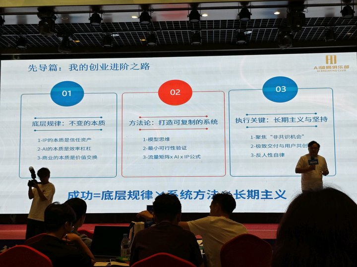
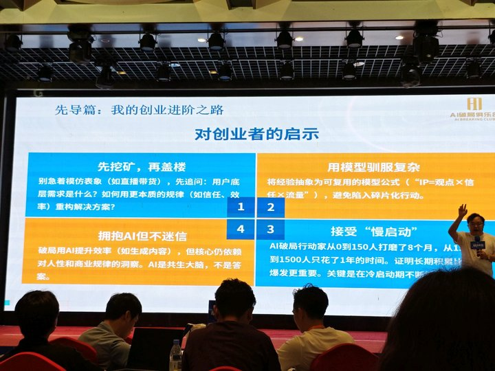
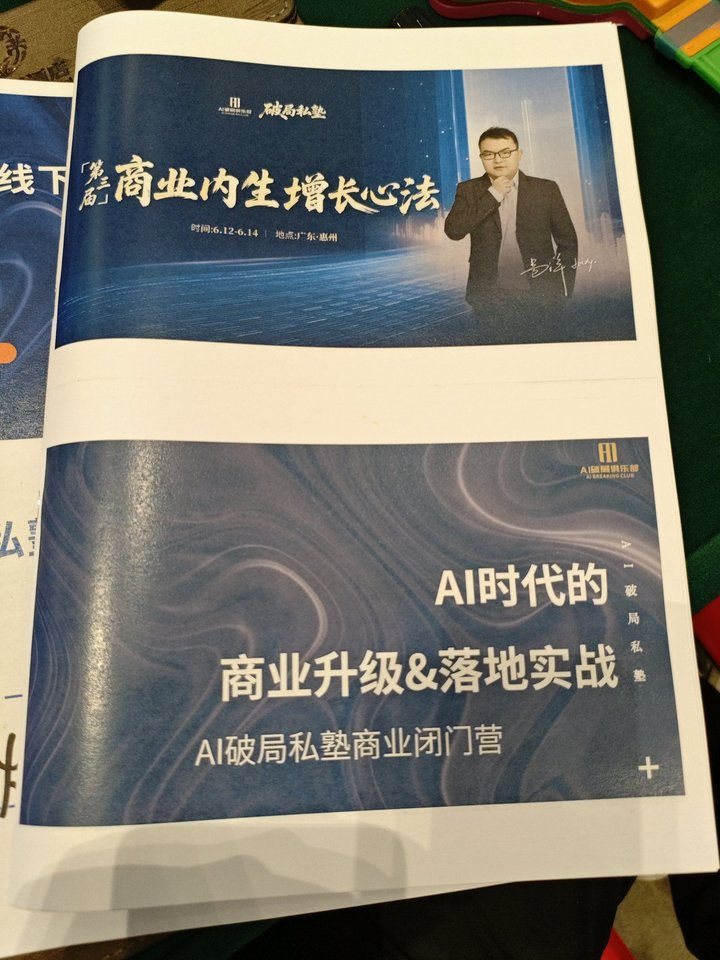
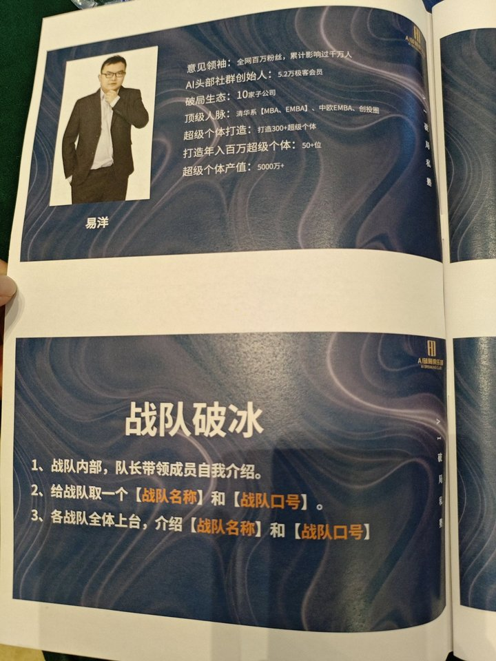
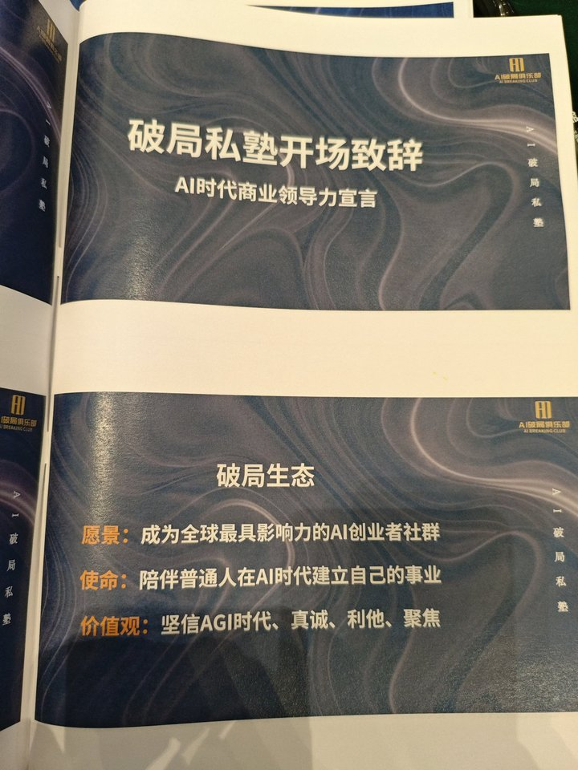
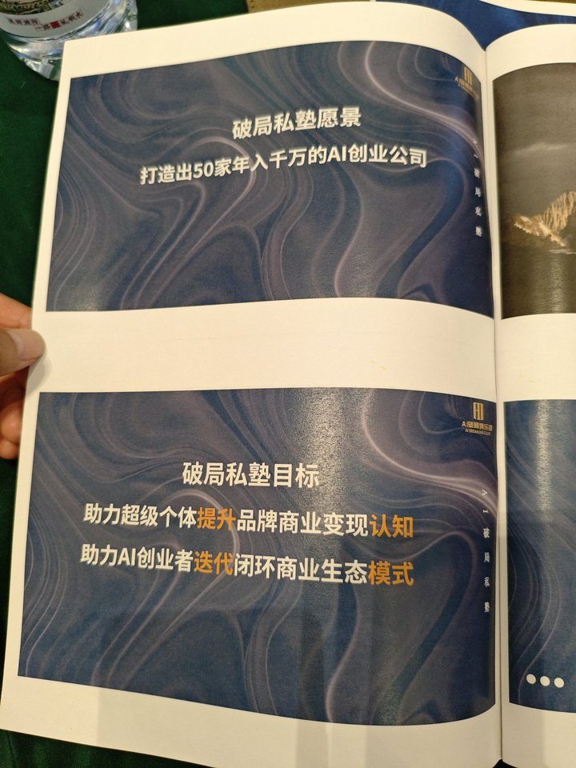
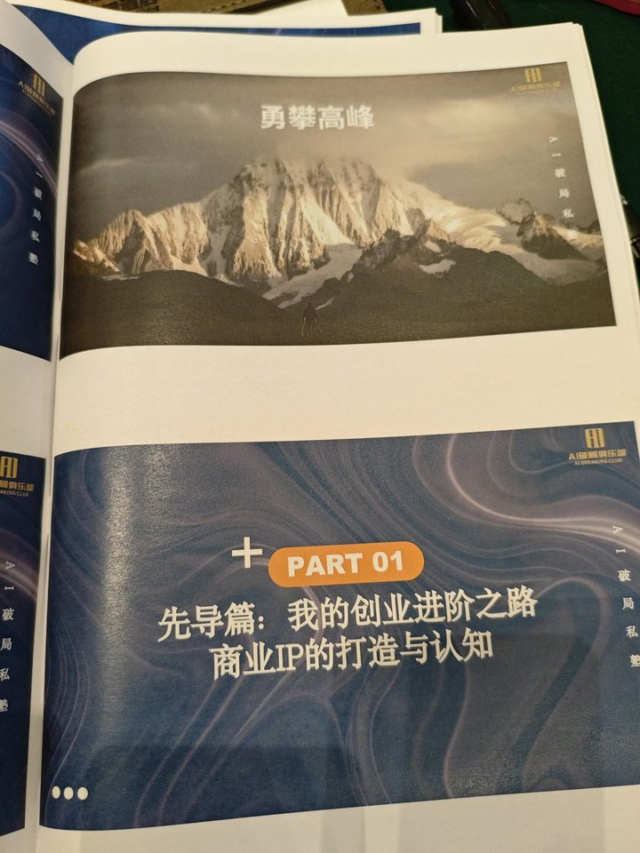
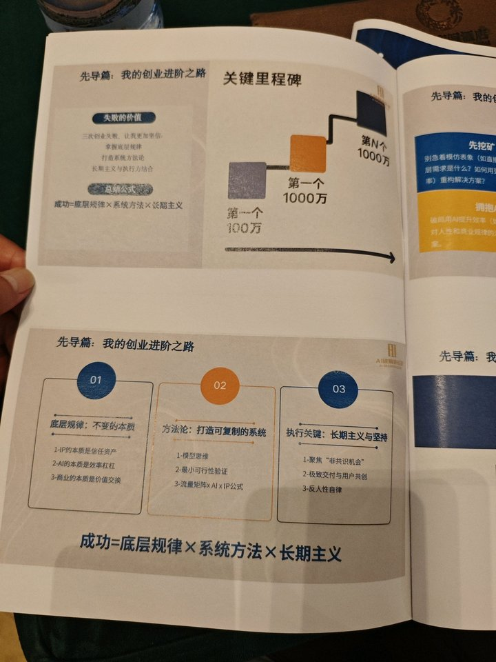
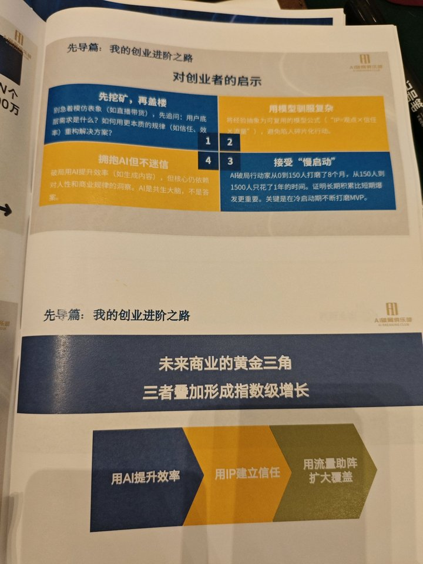

课堂图片画廊









0. 素材边界
- 笔记 ID：1912868579112712840
- 标题：洋哥商业心法
- 类型：class_audio
- 来源：app
- 妙记创建时间：2026-06-15 12:28:10
- 妙记更新时间：2026-06-15 12:28:10
- 子笔记数量：0
- 智能总结字符数：7746
- 文字记录句子数：41
- 课堂图片数量：9
1. 智能总结（妙记原文）
📑 智能总结
课程信息
- 授课时间：2026-06-12 09:44:11
- 时长：0 小时 31 分钟
- 领域：AI创业/商业增长
知识精讲
本次课程为AI破局私塾的先导篇，分享了创始人易洋的创业进阶之路，讲解了AI时代创业成功公式，以及对创业者的四点核心启示，明确了AI超级个体的定义和未来商业增长的黄金三角模型。
AI超级个体的定义
- 核心概念：AI超级个体并非指单独一人，而是个体借助AI工具与AI组织的能力放大个人杠杆，无论团队规模大小，都能实现高能效、低内耗、高速增长，这一提法由本次讲师提出。
- 勇攀五万米高峰的信念：老师提出人生只有一次，要给自己设定足够高远的目标，因为能力、资源甚至AI工具都会逐渐趋同，只有内心的高远目标才能驱动人持续创造，人类和其他物种的核心区别就是创造。
创业增长的三阶台阶
- 第一个100万：靠技能精进、持续摸爬滚打就能达到，在AI时代普通人都有机会达到。多数年薪百万本质是时代风口带来的运气，只有自己从零到一赚到的第一个百万才是真正的商业能力突破。
- 从100万到1000万：不再仅靠个人技能，需要框架思维、第一性原理、从入局者到主局者的能力，以及数据驱动业务迭代的能力。
- 千万以上规模：🚩重点：核心是赛道选择，能力相近的创业者最终成就差异本质由赛道选择决定。
成功公式（根据课堂图片校准）
- 核心公式：
$$ 成功 = 底层规律 \times 系统方法 \times 长期主义 $$
- 1.底层规律：不变的本质：底层规律就是事物不变的本质，可以作为人生选择、商业决策的筛选原则。核心底层规律包括：
- IP的本质是信任资产
- AI的本质是效率杠杆
- 🚩重点：商业的本质是价值交换（用户需求）
- 2.方法论：打造可复制的系统：方法论的作用是支撑可复制、可规模化的增长，核心包含：
- 模型思维
- 最小可行性验证
- 流量矩阵×AI×IP公式
- 3.执行关键：长期主义与坚持：长期主义需要做到三点：
- 聚焦「非共识机会」
- 极致交付与用户共创
- 🚩重点：反人性自律：长期主义需要牺牲当下的短期利益换未来的长期收益，是反人性的，最难做到但最重要。
对创业者的四点启示（根据课堂图片校准）
- 1.先挖矿，再盖楼：不要着急模仿他人的表层行为（比如直接模仿直播带货），创业首先要追问：用户底层需求是什么？再用更本质的规律（如信任、效率）重构解决方案。
- 🚩重点：底层需求是结合场景的精准需求，而非用户的表层表述，比如“我肚子饿了”是表层需求，“我200斤要吃减肥餐”才是精准的底层需求。
- 2.用模型驯服复杂：要将个人经验抽离为可复用的模型公式，比如$IP = 观点 \times 信任 \times 流量$，避免陷入碎片化行动，模型可以作为做事的检查依据，让行动更有章法。
- 3.接受「慢启动」：AI破局行动家从0到150人打磨了8个月，从150人到1500人只花了1年时间，证明长期积累比短期爆发更重要，关键是在冷启动期不断打磨MVP，打好底层增长引擎再做推广。
- 4.拥抱AI但不迷信：破局用AI提升效率（比如生成内容），但核心仍依赖对人性和商业规律的洞察。🚩重点：AI是共生大脑，不是答案，AI本质是提升效率的工具，不会直接让人成功，商业成功的核心仍然是对规律的洞察。
未来商业黄金三角（根据课堂图片校准）
- 核心逻辑：三者叠加可形成指数级增长
- 用AI提升效率：AI可以极大提升内容生产、业务运转的效率，当AI发展到可以快速生成各类产品、商品供给极大丰富时，用户的选择会转向信任IP。
- 用IP建立信任：当产品同质化严重时，用户会优先选择自己信任、喜欢的IP，因此AI时代IP的重要性反而会提升。
- 用流量助阵扩大覆盖：基于IP信任结合流量矩阵投放，是AI时代最优的增长解法。
破局生态核心信息（根据课堂图片补充）
- 愿景：成为全球最具影响力的AI创业者社群，最终打造出50家年入千万的AI创业公司
- 使命：陪伴普通人在AI时代建立自己的事业，助力超级个体提升品牌商业变现认知，助力AI创业者迭代闭环商业生态模式
- 价值观：坚信AGI时代、真诚、利他、聚焦
📖 课堂实录
[00:00:00](https://getnotes.seek:0) 定义AI超级个体
纠正大众对AI超级个体的误解：AI超级个体不是指单独一个人，而是指个体借助AI工具与AI组织的能力放大自身杠杆，无论团队规模大小，都能实现高能效、低内耗、高速增长。超级个体的概念由古典提出，AI超级个体的提法由本次讲师提出。
[00:01:00](https://getnotes.seek:60) 提出五万米高峰的人生信念
人做事业要设定梦想级、理想级、现实级三层目标，AI时代能力和资源都会被AI逐渐补平，唯一的差异来自内心的目标高度。以马斯克为例，即便已经拥有巨额财富仍然不停前进，本质是因为他内心的目标足够高远。人类和其他物种的本质区别是创造，而创造需要围绕高远目标才能不虚度此生，要找到自己真正认可的高远目标，而非外界强加的虚假目标。
[00:04:12](https://getnotes.seek:252) 开篇：创业进阶分享引入
本次分享为先导篇，分享讲师个人的创业经历，再进入正式内容。讲师提出观点：AI时代所有普通人都有机会做到年度千万营收，并将达到千万前的增长拆分为三个核心台阶。
[00:04:38](https://getnotes.seek:278) 第一个台阶：人生第一个100万
第一个100万可以是年度营收100万，也可以是攒到100万现金，到达这个阶段后会开始分层。讲师分享个人经历：在华为读硕士后，受百度师兄点拨意识到“所有成功都来自视野盲区，互联网浪潮要拿到公司股权才能赚大钱”，因此跳槽到360。在360和腾讯的竞争中，连续七天通宵顶住压力，最终获得公司股票，360上市后获得了数百万收益，后股票上涨获得千万身家。但这属于职场红利，本质是时代运气，真正自己赚到的第一个百万，是2019年开始做公众号后，通过内容、广告和知识产品，在2021年做到纯利润过百万，这才是真正的商业能力突破。
在年度100万以内，竞争对手大多不愿意持续精进，因此只要选好赛道、持续精进技能、超过身边大多数人，用科学方法就很容易达到。
[00:10:52](https://getnotes.seek:652) 第二个台阶：100万到1000万
这个阶段无法仅靠技能和向高手学习达到，需要底层认知和行为框架的改变：需要具备第一性原理思维，能拆解目标看到事物全貌；需要从入局者转变为主局者，能搭建让多方共赢的运行组织；需要具备数据思维，用先导数据、过程数据驱动业务迭代，不要只等结果数据反馈。
[00:12:16](https://getnotes.seek:736) 第三个台阶：千万以上规模
到千万甚至更高规模，核心决定因素是赛道选择。讲师以自己接触过的马化腾和周鸿祎举例：两位创始人能力差距不大，但赛道选择的不同导致最终成就的差异。
[00:13:01](https://getnotes.seek:781) 提炼成功核心公式
三次创业失败后，讲师总结出：掌握底层规律、打造系统方法论、长期主义和执行力结合，才能最终获得成就，人生本就起起伏伏，只要坚持长期主义结合执行力，最终所处的台阶一定会持续抬高。总结成功公式为：$成功 = 底层规律 \times 系统方法 \times 长期主义$。
[00:13:49](https://getnotes.seek:829) 拆解第一部分：底层规律是不变的本质
底层规律就是事物不变的本质，可以作为底层原则，应用在人生、工作、创业甚至生活选择的各个场景作为筛选标准。举例三个核心底层规律：IP的本质是信任资产，AI的本质是效率杠杆，商业的本质是价值交换。做任何事之前，都要先抽离出这件事的底层规律再动手，比如程序员接项目，首先要梳理清楚这个项目必须满足的不变核心要求，就是抽离底层规律的过程。
[00:16:13](https://getnotes.seek:973) 拆解第二部分：方法论是打造可复制的系统
方法论的价值是帮助打造可复制、可规模化的增长系统，让业务可规模化扩张。核心方法论包括模型思维、最小可行性验证、流量矩阵×AI×IP公式。成功需要先洞悉系统的底层规律，再在底层规律之上搭建可复制的方法论系统。
[00:16:56](https://getnotes.seek:1016) 拆解第三部分：执行关键是长期主义与坚持
长期主义看起来很虚，但非常真实，破局的价值观就是真诚、利他、聚焦，这三个都是长期主义，长期坚持非常难。比如聚焦会面临短期诱惑，需要放弃其他产品的短期收益；真诚利他需要长期先吃亏，短期感受并不好，但长期来看这些付出都会获得十倍百倍的回报。长期主义本质是牺牲今天的短期收益，去换一个不确定的更好未来，这是反人性的，因此非常难做到，但却是创业和做生意最重要的特质，做不到长期主义天花板会非常有限，长期坚持正确价值观最终会被商业世界筛选出来。
[00:20:07](https://getnotes.seek:1207) 对创业者的第一点启示：先挖矿再盖楼
做任何事都要先挖透底层规律，再搭建业务，不要上来就模仿表层现象。做商业首先要追问：用户的底层需求到底是什么？再用本质规律重构解决方案。互动提问：创业最核心的底层规律是什么？最终答案就是用户需求，更准确说，是用户的底层精准需求。
[00:22:28](https://getnotes.seek:1348) 讲解底层需求的定义
用户需求分为真需求和伪需求，表层需求不是底层需求，底层需求是和场景结合的精准需求。举例：“我肚子饿了”是表层需求，“我200斤了要吃减肥餐”就是结合场景的精准底层需求；“我要找女朋友”是表层需求，明确了自己对伴侣的筛选标准才是底层需求。用这个思路分析直播带货，本质就是人货场匹配用户底层需求，匹配得好就能做起来，反之做不好。
[00:24:25](https://getnotes.seek:1465) 对创业者的第二点启示：用模型驯服复杂
把模型注入大脑，做事就会有章法，有随时可以检查的依据。举例：讲师自己写公众号，总结了标题六条军规，每写一个标题都用模型检查，这就是模型的作用。要把经验抽离成可复用的模型公式，避免碎片化行动，比如$IP=观点 \times 信任 \times 流量$就是典型的IP模型。
[00:25:14](https://getnotes.seek:1514) 对创业者的第三点启示：拥抱AI但不迷信
讲师反对“学好AI就能成功”的说法：AI本质就是提升生产力，并不稀缺，哪怕未来AI能力很强，AI赚的钱最终还是为人类所有，核心仍然是人类对人性和商业规律的洞察。AI只是共生的效率工具，不是最终答案。
[00:26:13](https://getnotes.seek:1573) 对创业者的第四点启示：接受慢启动
以破局自身举例：AI破局行动家从0到150人打磨了8个月，宁愿不赚钱、宁愿用户流失，也要打磨透产品满足用户底层需求，打好底层增长引擎再推广，之后从150人到1500人只花了1年时间，这就是慢启动的价值，证明长期积累比短期爆发更重要。
[00:27:33](https://getnotes.seek:1653) 未来商业的黄金三角
未来商业要三者叠加获得指数级增长：用AI提升效率，用IP建立信任，用流量助阵扩大覆盖。讲师重点强调：随着AI能力越来越强，AI可以快速生成各类产品，未来会出现上万个AI应用产品，当产品供给极大丰富、同质化严重后，用户会优先选择自己信任、喜欢的IP，因此IP的重要性反而会提升，基于IP+AI结合流量矩阵的增长才是AI时代的最优解。
[00:30:14](https://getnotes.seek:1814) 破局增长案例
破局成立一年零一个月就增长到8000多用户，客单价2000元，实现了常态化营收，其中一千多增长来自战队活动，去年因为讲师自身战略误判，没有充分调动资源做战队活动，只增长了1500人，原本做好可以增长4000人，今年会重新发力。目前破局通过IP+AI矩阵打法，几十个矩阵号全部用AI产出内容、AI生成视频，再做基于IP信任的投放和自然增长，已经实现稳定的常态化增长。
🖍️ 重点速览
🚩 考点重点
- [00:10:52](https://getnotes.seek:652) 千万级增长核心能力：从100万到1000万需要第一性思维、主局能力、数据驱动能力，无法仅靠个人技能达成
- [00:12:16](https://getnotes.seek:736) 千万以上增长核心：成就高度本质由赛道选择决定，而非个人能力差距
- [00:22:28](https://getnotes.seek:1348) 底层需求定义：底层需求是结合场景的精准需求，不是用户的表层表述
- [00:25:14](https://getnotes.seek:1514) AI定位核心考点：AI是效率杠杆，是共生大脑，不是答案，商业成功核心仍然是对人性和规律的洞察
- [00:16:56](https://getnotes.seek:1016) 长期主义核心难点：长期主义是反人性的，需要牺牲当下短期利益换未来收益，是成功的关键特质
💡 核心概念
- AI超级个体：借助AI工具与AI组织放大个人杠杆，实现高能效低内耗高速增长的创业/做事模式，不限制团队规模。
- 成功公式：
$$ 成功 = 底层规律 \times 系统方法 \times 长期主义 $$
- 底层规律三原则：1. IP的本质是信任资产；2. AI的本质是效率杠杆；3. 商业的本质是价值交换
- 未来商业黄金三角：用AI提升效率 + 用IP建立信任 + 用流量助阵扩大覆盖，三者叠加形成指数增长
- IP公式（根据课堂图片）：
$$ IP = 观点 \times 信任 \times 流量 $$
✨ 课堂金句
- “我们所有人的生命都只有一次，人类和其他物种最大的区别就是创造，给自己一个五万米高峰的目标，才不虚度此生。”
- “所有的成功和增长都来自你今天视野的盲区。”
- “在关键点上极致的投入就会带来极致的回报。”
- “当产品全部同质化之后，谁有IP我信谁，我喜欢谁我买谁。”
- “长期主义都是让你牺牲今天，赢得一个不确定性的明天，这是人性里面最难的东西，但是它却是真正做生意、做创业最重要的东西。”
📝 待办事项
- 本次课程目标：梳理个人事业的底层规律，提炼自己业务的可复制方法论，坚持长期主义打磨产品
- 思考练习：写下你当前业务的用户底层精准需求，对照黄金三角梳理自己的增长框架
- 下次课程：后续会开授IP打造、混合增长相关专题课程
- 复习建议：反复理解成功公式，对照自身创业阶段补全能力短板
🎯 拍图总结
🔍 创业核心框架：成功=底层规律×系统方法×长期主义
- 底层规律（不变的本质）：
- IP的本质是信任资产：通过建立用户信任实现商业价值转化。
- AI的本质是效率杠杆：提升内容生成、用户服务等环节的效率。
- 商业的本质是价值交换：满足用户需求并获取合理回报。
- 系统方法论（可复制的系统）：
- 模型思维：将经验抽象为公式（如“IP=观点×信任×流量”），避免碎片化行动。
- 最小可行性验证（MVP）：快速迭代产品，验证市场需求。
- 流量矩阵×AI×IP公式：三者结合形成指数级增长引擎。
- 执行关键（长期主义与坚持）：
- 聚焦“非共识机会”：挖掘未被关注的细分领域。
- 极致交付与用户共创：提升用户体验并参与产品优化。
- 反人性自律：克服短期诱惑，坚持长期目标。
💡 对创业者的启示
| 核心原则 | 具体策略 |
|---|---|
| 先挖矿，再盖楼 | 不盲目模仿表象（如直播带货），先挖掘用户底层需求，用信任、效率重构解决方案。 |
| 用模型驯服复杂 | 将经验转化为可复用模型，例如“IP=观点×信任×流量”，系统化行动。 |
| 接受“慢启动” | 冷启动期需打磨MVP，长期积累比短期爆发更重要（案例：AI破局行动家8个月从0到150人，1年从150到1500人）。 |
| 拥抱AI但不迷信 | AI是效率工具（如生成内容），核心仍依赖对人性和商业规律的洞察，非万能答案。 |
🚀 未来商业的黄金三角
三者叠加实现指数级增长：
- 用AI提升效率：优化内容生产、用户服务等流程。
- 用IP建立信任：通过专业形象和价值输出积累用户信任。
- 用流量助阵扩大覆盖：多渠道触达目标用户，提升品牌影响力。
🏆 破局私塾生态与目标
- 愿景：成为全球最具影响力的AI创业者社群。
- 使命：陪伴普通人在AI时代建立自己的事业。
- 目标：打造50家年入千万的AI创业公司，助力超级个体提升品牌商业变现认知，帮助AI创业者迭代闭环商业生态模式。
2. 文字记录（逐句清洗）
01. 00:00-00:48 洋哥
加到这个呃状态。那么其实对于AI超级个体啊，这个词本来是我提出来的啊，很多人会认为就是一个人，其实这个是非常错误的观点啊。什么叫做超级个体的，或者AI超级个体，超级个体是古典提的，AI超级个体这个提法是我提的。什么是真正的AI超级个体？并不是说我只有一个人，而是说我借助AI工具和AI组织的。的能力，让自己的杠杆被最大化。而从而不管我是一个人、两个人、10个人还是100个人，我能做到非常高的能效，非常低的组织内耗，以及非常高速的增长。啊，这是AI超级无敌的注意，好，助力AI创业者迭代闭环商业生态模式。
02. 00:49-01:46 洋哥
OK，好，这张图送给大家啊。这张图的确是我的人生信念啊，大家看一下一个人啊，提着两个棍子啊，对，当然这个是你可以。理解成光剑或者什么对，然后去攀登50000米的高峰啊。关于50000米的高峰，我是非常想跟大家说的是吧，就是为什么过去行动家他加入的时候会有三个目标，梦想级目标、理想级目标、现实级目标。为什么很多回答不上来，还要坚持要达成目标？因为大家如果干很久了之后，你会发现一个很震惊的事情啊，就是如何人的能力、资源、天赋，甚至使用AI的工具的能力，到最后都会去投。尤其是AI时代，很多东西都会被AI帮大家补平。但是唯有一个东西，我可能是完完全全不一样的，就是这个人内心真正有。
03. 01:57-02:11 洋哥
可以百分百确定他永远达不到这个目标，因为这个目标太小了啊，当一个。的时候，你。这些毛。
04. 02:36-03:24 洋哥
还是一个小山峰，还是喜马拉雅峰，还是地球上不存在。叫什么马斯克，对吧？你会很好奇这个人他破产的时候，他工作起来还那么疯狂，为什么现在越来越疯狂，为什么都有10000亿美金了，还要永不停歇，因为他内心的。太高了，就这么简单。所以我希望大家记住这四个词叫永安高峰，因为我们所有人的生命都只有一次，我们几乎没有，当然不是相信玄学的阻碍啊。对，呃，如果你不相信玄学，对吧？然后不相信来自我们每个人的生命应该都只有一次。
05. 03:24-04:09 洋哥
那人类和其他物种有什么本质的区别？我觉得最大的区别是，回到了一个词叫做创作。创造人类是可以创造东西的，和其他的生物在地球上的都不行。那么创造我们要围绕着一个目标去创造，我们才能够不虚度此生。所以给自己一个五万米高峰的目标，并且。真正认可他这个目标啊，比如说有些人说我要我要三年后年度过亿，那个真的是你的目标吗？那一年赚了一个亿，你准备。拿他做什么？这因为你想告诉妈妈吗？对吧？所以这个可能就不是一个好的目标，因为他可能根本就不是你真正需要的。
06. 04:09-04:57 洋哥
OK，好。啊，我们今天先导片是我的创业的进阶之路。啊，简单的给大家讲一下我的一些经历，然后我们开始到正式内容。啊，我认为所有人所有的普通人在AI时代都有机会年度千万，所以在千万以上的我就没写了啊。对，那么在年度千万之前。一定都会有几个台阶，我觉得第一个台阶是啊，你人生的第一个100万，要么是年度100万，要么是你已经有100万的现金了啊，因为到这个阶段之后，我们就开始分化了。好，我们先说年度100万，对吧？呃，我讲一下我自己的经历啊，但这个里。
07. 05:07-05:50 洋哥
然后工作一年后，我就跑到深圳大冲去了。工作一年多，原因是因为百度的一个师兄点了我一句话，他有一次去深圳，然后突然紧急找我，因为我在读华科的时候，他关系就比较好，他比我大两届，我们是在学生会活动认识的。然后他说，哎呀，我来深圳了，我要请你吃饭。哎，我就过去了，结果过去我发现这个五星级酒店的顶层的包间。然后我进去的时候看到那个菜单，我心里咯噔了一下，问需要人均四五千块钱啊，是深圳最高端的一个酒店。我今天还记得的印象啊，就进去之后，太多好几个大菜都点好了，是龙虾、鲍鱼、鱼翅，一大堆我没吃过的东西。
08. 05:50-06:34 洋哥
所以好，我就好奇，我就说师兄你怎么这么有钱呢？他说那个百度上市了，你知道吗？我说我知道啊，他跟你有什么关系？他说百度给了我。一些股票，这些股票我呃打工200年都赚不过来。啊，因为我跟他关系非常好，走的时候他跟我说了一句话，他说所有的成功和增长都来自你今天视野的盲区。这第一点，第二点，但是有一个确定性的视角我可以告诉你，如果你在互联网中的浪潮拿不到公司的股票，你是不可能有什么成就的，也不可能赚大钱的。好，这两个我当时记得非常清楚，回去以后我就思考，培训已经4000多人了，后来我就跳槽了，跳槽我到360。
09. 06:34-07:14 洋哥
我大部分的人生目标就是攒一百万啊，那个时候没没没赚钱之前，所有人都会有这个想法。对，10年我在360，我当时想我什么时候能攒一百万？我是哦，当然我师兄可能已经有一两个亿了啊。对，那那我不敢想。对，好，结果在360遭遇了三个炸弹，我疯狂的工作。哎，这里面我特别想跟大家分享，在关键点上极致的投入就会带来极致的回报。啊，比如说我们拿过去行动家的产品来说，大家在进来的前三个月，如果非常卷的话，如果天天在小群提问啊，这一波人他们都会得到更大的提升。
10. 07:14-07:54 洋哥
我当时学360的就是一个关键的战略时间点，因为3682已爆发了，然后我做了一件什么事呢？我连续7天通宵做空房，我们兄弟部门的产品都被腾讯卸载干净了。而我们部门只被腾讯卸了百分之十几，他在我们四个，我们部门只有两个人，因为前面的人已经走了。当时山东也很动荡，我加一个实习生，就我们两个人顶住了这一波，然后副总裁大笔一挥就给了我两张股票。而那个时候我还不知道两张股票意味着什么，我还在想什么时候能攒100万，结果呢？过了半年后，360就上市了，上市的时候我记得很清楚，那时候我们整个公司在庆祝。
11. 07:55-08:56 洋哥
然后我看了一眼股价，然后我计算了一下，我说怎么我怎么突然我有三。在发展，哈哈。啊，大家可能很难体会那种感受啊，当时啊那那种感受是我人生第一次感觉有钱的感觉啊，对。但300万它只是个开始，就是很快，360股票涨了五倍五倍以上。所以13年啊，我在360的股票就1,000多万了，所以我在职场突破这个台阶是很顺利的，但我真正的人生突破并不是在职场发生的，也就是15年我自己啊，我在深圳掏了1,000多万，然后觉得嗯公司太沉重了，我就开始出来创业，出来创业的时候我是融了500万，我开始干。然后一路头破血流，那么真正能够靠自己脱离职场，挣到人生的第一个100万，这个时间要到2021年了。也就是2019年11月，我开始写公众号，我开始自己探索独立的商业闭环，一直到两年后。
12. 08:56-10:18 洋哥
通过接广告，通过做我的职场星球，哎，今天来的有没有在我的职场星球买过职场星球的买的举个手。哇，你看有四个买过职场星球啊，对，那个当时价格是呃，价格是一1999还是多少？忘了，卖了卖了一千多分吧。嗯，然后职场星球假期广告这一年我是超过了100百万的物业收入，这是我的人生的第一个，真正的100百万。因为职场我把它归于运气，因为今天的很多人到今天还不知道，对吧？比如说年薪50十万，100百万、200百万，这个人群，我们过局行动家里面有很多。但我不得不说，大家今天拿的工资就是靠运气来的，就是靠这个时代的风口，恰好你在那个位置上，这个位置放任何一个其他人，只要是本科毕业的，只要是学过几年程序的，都可以拿这个钱。不会有什么区别啊，不会有什么区别。所以在这里我们，我为什么说我的第一个100万是在第二一审上发生的，原因很简单，是真正感受到。商业世界的残酷啊，这个这个过程我来跟大家说一下。在这一个过程，你拿到人生的第一个100万，更多的是靠爬坡滚打，总结经验以及向高手学习，以技能型为主导的技能，ok，基本上100万很容易达到。
13. 10:19-11:25 洋哥
大家要知道一个事情，这个世界他妈的就是一个巨大的屎烂，大部分都傻逼。大部分都是傻逼，99%的人都傻逼。我说的傻逼并不是侮辱性词汇，我是说他们根本就没有让自己精进的能力。所以竞争对手在，甚至是年度100万以内并没有那么难。很简单，你再选好一个赛道，不断的精进，当你的技能超过身边的人的时候，再用科学的方法，很快就有机会能达到。但是从100万到1000万，是不再是技能和简单的向高手学习就能做到。那么到年度一千万，或者说当你有存款一千万，你更需要的是框架思维、认知和框架的行为的改变。也就是你看到任何一个事情，你能不能有第一性原理做支撑，快速地告诉自己其他的角度？当用第一性原理拆解了目标之后，你能不能用头脑上岸的方式去拆解对标，站在外面去看到一个事情的全貌？
14. 11:25-12:16 洋哥
啊，这是所有我身边我认识的年度达到年度千万的这些人都有的共性，以及你能不能传一个局面，从入局者到主局者，能够传出来一个大家都能够在其中有收益的一个运行的组织，等这些底层能力，以及你能有，能不能去看数据，把你的业务数据化，数据驱动你的业务的迭代。因为数据的反馈是最快的，而等到你体感过后，那个时候一切都迟了。以及你能不能懂得这句话里面的部分，比如说先导数据、过程数据、结果数据。我们要控的是先导数据和过程数据，而不是等待这个结果数据的发生等等等等啊，它会更复杂。也就是到这个区间是这么一个逻辑。
15. 12:16-12:59 洋哥
好，那么年度扔个千万甚至几个亿，甚至更多呢？来，只有一个词的话，就是赛道选择。到更上面的实战的选择，在前段时间我的 ip 我们的 ip 助理问了我一个问题，他问我马化腾和周鸿祎两个人能力上有多大差别？其实这两个老板我都亲，我都自己汇报过啊，因为马化腾是当时抓我们部门经常跟我们部门开会，因为那个时候腾讯只有三四千人，而 QQ game 是当年最赚钱的部门之一。呃，周鸿祎我是做总监给他汇报过，其实这两个老板他们的能力上并没有特别大差距。我本质上是赛道的选择，啊，导致了一个成就会更高，一个成就会稍微差一点。好，呃，那。
16. 13:01-13:36 洋哥
失败的失败了很多次，失败的价格呃三次创业失败后更加坚信，掌握了底层规定，打造系统方法论，长期主义和执行力结合，才能够获得最终的成就，并且人生都是起起伏伏的。比如说你今年突然很赚钱，突然不赚钱，甚至你又你现在可能觉得你不会遭遇说所有重灾区，你或者甚至是完全没钱的状态来相信我，呃，该发生的都会发生，但是呢。更重要的是长期主义和执行力的结合，到后面你所处的台阶始终会比前面高更多。
17. 13:36-13:53 洋哥
好，总结公式，成功或者取得成就等于底层规律乘以系统方法乘以长期主义。ok，好，长期主义我们等会会讲，它很虚，但它的确非常真实。ok，好，底层规律不变的本质，比如说我们超过你出。
18. 14:01-14:43 洋哥
我发现SOP不够，SOP在指导我们做所有的细节的事情，或者做甚至我们把SOP做成skills，把skills做成工作流啊，把工作流做成啊完完全全自动化的。哎，这些还不够，为什么？因为你会发现。你会发现如果你只搞这一套，你只搞这一套，很多来自于原则性的东西，它是不能够被写进 SOP 或者是你很难把它写进去。如果你要写，你只要写100个 SOP，1000个 SOP。但如果你把这个原则思维灌入到或者影响了这个员工，哎，这些 SOP 你不用写了。
19. 14:43-15:33 洋哥
OK，好，那么这个底层规律就是我们的原则信条，这个底层规律作用于我们人生，可以成为我们人生的原则，作用于我们的工作创业，可以成为我们工作创业的信条，作用于我们像慢慢你喜欢的找女朋友，对吧？啊，那可以。做一个筛检标准，对吧？ ok，好，这就是底层规律，它是不变的本质。那么比如说我举了几个例子啊，第一个 ip 的本质是信任资产，它就是一个底层规律。 ai 的本质是效率杠杆，它也是一个底层规律。商业的本质是加速要快，对吧？这三条。那么当你的工作、生活、相亲以及各种做事的时候，甚至当我今天来做公众号增长的时候，我能不能抽离出公众号增长的三条底层规律？
20. 15:33-16:11 洋哥
只要有这些东西，而所有的事情我们在做之前，我们先去思考它的底层规律究竟是什么。那你们可以审视一下，大家现在可以一起想一想，你做了那么这么多事。你有没有在做之前先想底层规定好？我跟大家简单说一下，我自己在做程序员的时候，我接到一个任务，不管这个任务是一个模块，还是一个工程，还是一个独立的项目，首先我们想想它的底层规律是。是什么？底层规律是什么？比如说我今天做的游意大利，它的底层规律是什么？它有哪些必须要满足的东西，这就是底层规律，不变的本质，我们要把它抽离出来。
21. 16:11-16:56 洋哥
好，第二块方法论。方法论叫做打造可复制的系统，方法论究竟作用于什么？我们经常在说方法论，方法论为什么重要？因为方法论就可以帮助你打造可复制的系统，可复制化增长，可规模化增长。所以你会看到创业这件事情，或者我们同样都是做副业，有的人可规模化，有的人不可规模化。那么我们要问一个问题，方法论可能没有抽离出来。好，方法论包含哪些？比如像逻辑思维就是方法论，最小的可行性验证，流量矩阵乘以AI乘以IP的公式。OK，所以第一个洞悉一个系统的底层规律，第二个在底层规律的洞悉之上打造这套系统的方法论。
22. 16:56-17:59 洋哥
第三点，长期主义和坚持。那么。长期主义和坚持体制来很虚，比如破局的口号叫做价值观，叫做真诚利他聚焦，而真诚和利他聚焦这三个都是长期主义。你要长期保持真诚利他是非常难的事情，非常非常难。你要长期保持聚焦也是非常难的事情，非常非常难。你比如说我跟大家举个例子啊，过去三年我收到过很多反馈，说你破局为啥就做这么点事情？对吧？那你这个产品不能做一做，那个产品不能做一做。好，这个时候你就会遭遇一个，对吧？哎，我想想，我好像我们 k 娃也很多，我们资源也很多，为什么我又不能再做做更多的事情呢？对吧，这个时候聚焦就会遭遇挑战，而真诚利他，你如果秉承真诚利他，你在人生过程中是一直给你的体感一直在吃亏，一直在吃亏和内耗，但是我告诉大家，今天你的这个吃亏和内耗未来会有十倍百倍的回报。但是会，但是不好的能看到我。
23. 18:00-18:55 洋哥
未来是没改变，所以长期主义它不是一个虚妄的词，它是一个真实的。就是你秉承了什么样的价值观，这个价值观它不是赚今天的钱。损耗未来的钱，不是赚未来的钱，牺牲今天。所有的长期主义都会指向今天的困局，这就是长期主义最难的。所以呢，大家有时候想长期主义不很简单吗？对不对？错，非常难。比如说我们破局的这三个词，真诚与他聚焦，你要聚焦你眼前就赚不了另外一个产品的钱。你要聚焦你的朋友圈，就没办法发那么多广告。你要聚焦，你就得舍弃一些东西，对吧？如果真诚的他了，你就得吃亏。简单的说，翻译过来你就是先吃亏再享福，对不对？先吃亏做筛选，然后再往前走。
24. 18:55-19:23 洋哥
所以你看长期主义都是让你牺牲今天赢得一个不。确定性的明天，这是人性里面最难的东西。但是呢，它却是真正做生意的、做创业的最重要的东西。如果你做不到长期主义，你的天花板就非常有限。就是所有的冲出来的人，大家可以看我们请过一些人，为什么大家都是趋同的？本质上都是趋同的，为什么？因为这是被商业世界筛选出来的。
25. 19:24-20:01 洋哥
所以你看，很多东西我们看似自私，其实没有做到自私。很多行为我们看似很无私，其实是最终你还是自己收获，就这么简单。但这个道理不难，能不能想通很难很难，只能，人交流都很难交汇。但是我今天把这个火种放在这，在你们后面的生活、工作、创业中，如果遭遇了困境，哎，你突然想说，为什么不跟我合作了呀？这个为什么开始，对吧？本来原来我用的爽爽的，呃，很爽，现在为什么要跟我作对呀？等等，哎，反制一下，你自己有责任。做到长期主义，对吧？
26. 20:02-20:26 洋哥
当然我这只是举个例子。好，这三个其实我创业总结了三个最重要的东西。好，一些启示啊，我们任何事情是先挖矿再盖楼。OK，比如说我们教大家的开解课啊，因为我觉得对于系统化思维，就是我们看万事万物都是系统，以及针对系统的深度挖掘和模仿，是我们踏。
27. 20:33-21:34 洋哥
这句话用户的需求到底是什么？如何用更本质的规律重构解决方案？好，为什么在这里提到了一个用户底层需求？我们前面提到底层，我们来把创业这件事拆解一下，你会发现一个事。如果说创业的底层规律是什么？大家可以用一句话说出来，如果只允许有一个一句话，那这是什么？那有没有人抢答？一下，奖励20个金币，答对的话。如果光电这件事，它的底层位置只有一条，请问这一条是什么？答案已经放在多了啊，来，慢慢，呃，可以慢慢要快，行，云朵，给他快，20个金币啊，帮我记录。所以大家认真听一点啊，随时会有福利发发布。然后呢，我们的规则很简单，对，因为对于世俗现象来说。会有更多奖励，对吧？啊，所以呢，你们看这个问题是啥嘞？我靠，天哪，他比较高水准，外面服了你。
28. 21:34-22:14 洋哥
好好，我跟你说问题，对创业这件事，如果只有一个底层规律，那么它会是什么？消费者导向啊，有点接近啊，但是还不完全是。哎，罗总，哎，我说了这个答案。罗律师，你罗律师找到用户需求好，对他不经历只有四个字，就叫用户需求。好，所以还加一点罗律师吧。OK，好，请请罗斌接第二组竞品啊。OK啊，这样这样咱们抢答的去到这个小组有主管部队，好不好？可不可以？可以吧，加强小组荣誉感，给给二组接第二组的竞品。
29. 22:14-23:13 洋哥
OK，好，来，所以这里面所有的商业行为，你先问一句用户的底层需求是什么？好。为什么加了一个底层。用户需求会分为真需求与需求。比如说我今天我现在肚子饿了，我说我肚子饿了，来问大家，这是真需求还是伪需求，或者说他是个需求还是个底层需求，我肚子饿了。休闲鞋。他可能是个伪需求，对吧？这只你看啊，我们来看这个词非常关键啊，我这里把这个地方给大家讲清楚，用户需求究竟是什么？是用户肚子饿吗？是你妈妈想找女朋友吗？是大胸又想。有钱吗？并不是，并不是对吧。你慢慢想找朋友，但你今天不清楚他的筛选标准的时候，你无法满足他这个需求，他没有变成精准需求或底层需求。
30. 23:13-23:44 洋哥
这里的底层需求说的是精准的需求。好，我肚子饿了，并不是一个底层精准的需求。它只是一个表象的需求。但是如果我这么告诉你，我肚子饿了，但我200斤了，我要吃减肥餐。来，这个时候它是不是变成了底层需求？是不是大家懂了吗？好，比如说我再说我肚子饿了，我平时最爱吃的就牛排，这个时候它就变成底层需求。好，这个底层需求是跟场景结合的精准需求。
31. 23:44-24:25 洋哥
所以。我们看直播带货，来用底层规律去分享分析它的话，就叫做人货场，以及这个直播间为什么不火，那个直播间为什么火，对应着人货场里面的匹配，或。跟人的需求对不对？场力是不是为这个产品怎么打造的？你拿农货场再去分析，你会发现有的直播间能把用户需求满足的非常好，有的直播间没有真正抓住用户的底层需求。好，所以这是第一个，先挖杠再盖楼啊，追问用户的底层需求是什么，如何用更本质的规律重构解决方案。好，那么当你。
32. 24:25-25:10 洋哥
做完第一步之后，你就需要用模型去主导。那模型对我们的意思，如果我们自己把这些模型注入了我们的大脑里面，你做事就有了章法，你就有了随时检查的依据。检查工具，比如说你看，我举个例子啊，我写公众号，我自己以前为了服务我自己，我定了六条军规。第一条必须有数字，第二条必须有流量关键词，第三条必须有冲突原因，第四条尽量是动词，第五条如果很长的话，需要多个流量关键词，还有第六条我忘了啊，呃，应该是五条，对。错了，还我应该六条啊，还有没有人记得六条啊？我现在突然忘了。对，好，我们为什么要总结这个东西？是因为我没写一个标题要去检查它，所以这个就是模型的力量。
33. 25:10-25:38 洋哥
模型就是公式，或者就是抽练的真正的核心。ok，好，将经验抽一层可复用的模型公式，避免陷入碎片化行动，拥抱 ai，淡定迷信啊。ok，我非常反对只学好 ai。就能成功的这种狗屁说法，我发现很多同行很多竞品都在打这个概念。啊，因为他们刚转型 ai 嘛，上来就说，啊，所有的都学 ai 就成功，对吧？这个我是非常反对的。
34. 25:39-26:17 洋哥
学 ai 并不会让任何人成功，为什么？因为 ai 的本质就是员工生产力，而全世界有70亿人，今天很多都找不到工作，ai 有这么稀缺吗？并没有。所以呢，他依旧，在他没有完全觉醒之前，他依旧只是我们人类的最大的一个工具，哪怕。未来你就成了 ai 的董秘，而 ai 赚的钱还是为你所有。好，拥抱 ai，但核心人依赖对人性和商业规律的洞察。ai 是共生大佬，但绝对不是我们的答案。ok，好，以及长期主义的借势慢启动。
35. 26:17-27:15 洋哥
这里我特别想再给大家重点说一下，过去行动家。从0~100不失。花了8个月时间，从150人到现在一直累计1700人，只花了不到两年时间。为什么呢？这8个月我们究竟在干什么呢？所以这8个月我们宁愿我们的用户去到别的生态，他没有来行动家，宁愿流失，宁愿不赚钱，在干一件事情，我要把这群人他们真正的底层需求以及如何满足他们的底层需求的产品。标准化以及做大者，以及不断的探寻新的需求。也就往尽可能的把这个产品做成底层的增长引擎，是ok的，再去做推广啊。这个我觉得是呃，或许在过去三三年坚守长期主义的一个案例和印证啊。
36. 27:15-27:59 洋哥
这个第一批行动家有没有150级的举手？就一个啊，这么惨，两个啊，好，对，两个，啊，三个，三个，对，在大冲，对，呃，所以那那段时间其实是一直憋着的，所以这个就是一个慢启动。好，ok，那么未来的商业的黄金三角，三者叠加，提升指数级的增长。啊，这个用 AI 不断的智能效率，用 IP 建立信任，用流量助阵，扩大覆盖。这里我重点提一下 IP 啊，对我我觉得我对 AI 有判断，我今天在线下带给大家重点说一下，就是 VDI 这个问题，到飞巴，飞巴5.0。好我们。
37. 28:00-28:44 洋哥
我知道大家应该还没用过，大家过一段时间就会用啊，过一段时间就会用，你会用你你用 vivo 5.0你会发现一个很恐怖的事情，很恐怖的事情，我们说可能扣的已经是一大截了，口袋的是，我现在天天用口袋的是，然后我试用一下 vivo 我的感受是。当然，可能贫穷会限制我，对吧？因为因为飞巴我特别贵啊，但是他现在已经做到什么？比如说你给他说一句话，你给我做一个星际争霸，你给我做一个星际争霸，他可以给你做出来，并且是及时战略的。哇，很可怕吧！所以 AI 对效率的提升，对人类的替换是一是非常可怕的。
38. 28:45-29:33 洋哥
但是这里面会带来一个非常大的问题，当商品无限多的时候，我究竟选择谁的商品？以后那个小豪也可以做一个啊，AI叉叉叉啊，那那那呃，谭永强也可以做一个。对吧，老赵也可以做一个，啊，或者我们拿 ai 应用公司这个产品来说吧，未来这个商业面会出现几万个 ai 应用公司，对不对？甚至你要说 ai 应用公司破局也算 ai 应用公司，对吧？因为很简单吧，这是社社会的浪潮嘛，啊，至少有上万个 ai 应用中的产品，甚至我们很多同行，他原来不是干 ai 的，也是把 ai 应用公司的，ai 超级个体啊，这些概念，对不对？当产品全部同质化之后，怎么办？两条路啊，我告诉大家两条路。
39. 29:33-30:11 洋哥
第一条路就是好好做IP，第二条路就是把你的用户一定要服务好，然后把它们两者结合起来，你就可以获得当别人不增长，你还可以增长。本质原因是什么呢？是我选择谁都可以选择的时候，谁有IP我信谁，我喜欢谁我买谁，就这么简单。所以IP更重要了，IP在VS在更重要了，且基于IP和VI的混合投放和增长才是最优解，这也是我们前面两次思。一个讲过的啊，因为这一次课只有一天半，所以这一块被去掉了，也就是关于怎么做 ip 怎么做投放，怎么混合增长的这一块去掉了啊，但是大家欢迎后面可以来听，对。
40. 30:11-30:49 洋哥
啊，然后这里面的底层逻辑是什么呢？我结合破局来说，破局一年一个月一年零一个月时间增长了8000人，8000多吧。然后我们的客单价已经是2000了，差不多常态化的营收。啊，这里面8000有一千多是打战队打出来的。啊，我我我今天必须得啊承认一个错误，呃，就是我们去年打战队的时候，我正在我正在做，我正在当时我们撬动的日播策略啊，每天卖600个40元。所以那段时间我天天在卖那200亿，对，战队我没有，我们去年打的很一般。
41. 30:50-31:55 洋哥
啊，战队很一般。那当然我相信破局的交付还在，我们的QR还在。呃，2027年我们肯定要搬回来，但是我们去年战队。因为我自己的失误，因为我自己想活火啊，导致战队没怎么调动起来，或者没调动。或者我内心其实在想一个问题，当时因为我的我的常态化增长已经非常猛，当时当时一个月是增长一千多人，我在想那打战队这种有营销属性的，我就不想动用大家了。当时有个想法，所以我们再行动加群也没说星球，也就是最后。最后两天通知了，所以我们如果调用所有资源，我们相信应该能够增长4,000人左右，但实际上是增长1,500啊，这是一个灾难。如果原路拉新没做好，是个灾难，但是破局平稳的都不得是个灾难，为什么？因为我们的日增，我们通过 ip 和 ai 矩阵的打法，我有我有二三十个矩阵号，全部用 ai 产出内容，全部用 ai 拍视频，然后开始投放，基于 ip 新人的投放，基于 ip 自然流量增长啊。基于我们的交付的快速性已经能带来。
3. 课堂资料
3.1 音频附件元数据
| 类型 | 标题 | 时长 | 大小 | 备注 |
|---|---|---|---|---|
| audio | file-1 | 31:56 | 0 | 音频二进制未落库，转写文本已完整保存 |
3.2 图片资料索引
| 时间 | 类型 | 本地文件 | OCR 字符数 |
|---|---|---|---|
| 16:12 | 图片 | assets/class-images/01-001_WadRXb-01.jpg | 74 |
| 20:42 | 图片 | assets/class-images/02-002_FPxXcR-01.jpg | 101 |
| 25:00 | 图片 | assets/class-images/03-003_aJR6Tk-01.jpg | 47 |
| 25:13 | 图片 | assets/class-images/04-004_N9x3aV-01.jpg | 363 |
| 25:29 | 图片 | assets/class-images/05-005_ZB1Yt8-01.jpg | 183 |
| 25:43 | 图片 | assets/class-images/06-006_hrgnBL-01.jpg | 68 |
| 25:52 | 图片 | assets/class-images/07-007_IG4eG7-01.jpg | 96 |
| 26:02 | 图片 | assets/class-images/08-008_2irXy8-01.jpg | 515 |
| 26:10 | 图片 | assets/class-images/09-009_4YSOi6-01.jpg | 216 |
3.3 OCR 结果（Tesseract，质量仅作辅助）
1. 16:12 001_WadRXb
- 本地图片：assets/class-images/01-001_WadRXb-01.jpg
- OCR 汇总：sources/ocr-combined.md
人一全
先导篇: 我的创业进阶之路
a
一全 | )
i) l
Ae Civebr Nase2. 20:42 002_FPxXcR
- 本地图片：assets/class-images/02-002_FPxXcR-01.jpg
- OCR 汇总：sources/ocr-combined.md
PR lie t—“‘i‘“C™SCSC*‘*wC
a ee a ee eee
| j RE MV SEY Be
let lai
>} = a eae3. 25:00 003_aJR6Tk
- 本地图片：assets/class-images/03-003_aJR6Tk-01.jpg
- OCR 汇总：sources/ocr-combined.md
AH BARA He Ruts | 7 |
TD iets
' AnRAAE LATE4. 25:13 004_N9x3aV
- 本地图片：assets/class-images/04-004_N9x3aV-01.jpg
- OCR 汇总：sources/ocr-combined.md
_ ton “Ty
意见领袖: << 3 |
fon eas TAN |
vs TDI: oR oa MBA]. *PRREMBAS e810 过 |
打造 打造300+直级个体 |
{ el eae oo 4 |
HEB MRPE: stor 2 | :
/
战队破水 “|
站
1, 战队内部，队长带领成员自我介绍。 有
2、给战队取一个【【 称] 和【 le 4
3) SUMSHES, gun] 1a [ } 15. 25:29 005_ZB1Yt8
- 本地图片：assets/class-images/05-005_ZB1Yt8-01.jpg
- OCR 汇总：sources/ocr-combined.md
| i
' 破
| Rese
: | ALES Ra OS ae -
‘
x a3 成为全下最上用力的All者社 下
: 信合:陪伴普通从在A时代建立自己的事业
坚信AGI时代、真诚、利他、聚焦 :6. 25:43 006_hrgnBL
- 本地图片：assets/class-images/06-006_hrgnBL-01.jpg
- OCR 汇总：sources/ocr-combined.md
WSS
mausontby tae 、
破局私扫目 Ss |
助力超级个休 站可商业 1
助力Al创业者迁代闭环商业生态 中7. 25:52 007_IG4eG7
- 本地图片：assets/class-images/07-007_IG4eG7-01.jpg
- OCR 汇总：sources/ocr-combined.md
Jongg AINE S
| mn
: | : 4 + PART 04 re
a oe ee
ai) EP RTES WA8. 26:02 008_2irXy8
- 本地图片：assets/class-images/08-008_2irXy8-01.jpg
- OCR 汇总：sources/ocr-combined.md
HOM: RVC 5 oy BH AB oe
第N个 rier
fii: =) 本本方案
exe SS 10008
AEP MERIRIR x Rth BE 第-个 ammaraee
oe pa ot ABERL Eee
一一一
先导篇: 我的创业进阶之路 AL 先导篇: 我
-9@- 9 -9@
| BBM: FEAR | ”方法论: 打造可复制的系统 | 执行关键: 长期主义与坚持
2入的本所是效事村杠 | -最小可行性验证 PRR SPR,
SR EI | 3流量乱降X Al x past | 了区人性自律 |
es) a i |
AUD=IRERINE x REST x Senge foe9. 26:10 009_4YSOi6
- 本地图片：assets/class-images/09-009_4YSOi6-01.jpg
- OCR 汇总：sources/ocr-combined.md
hy
5 ARM: BLOG OH op >
’ 对创业者的启示
0 ov SS,
事) 重构解决方案 Re (ints 加 加
>
4 先导篇: 我的创业进阶之路
未来商业的黄金三角
7 7 Sey MRK
Fava
用Al提升效率 扩大对读 |